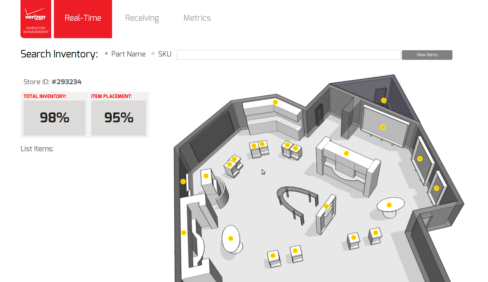
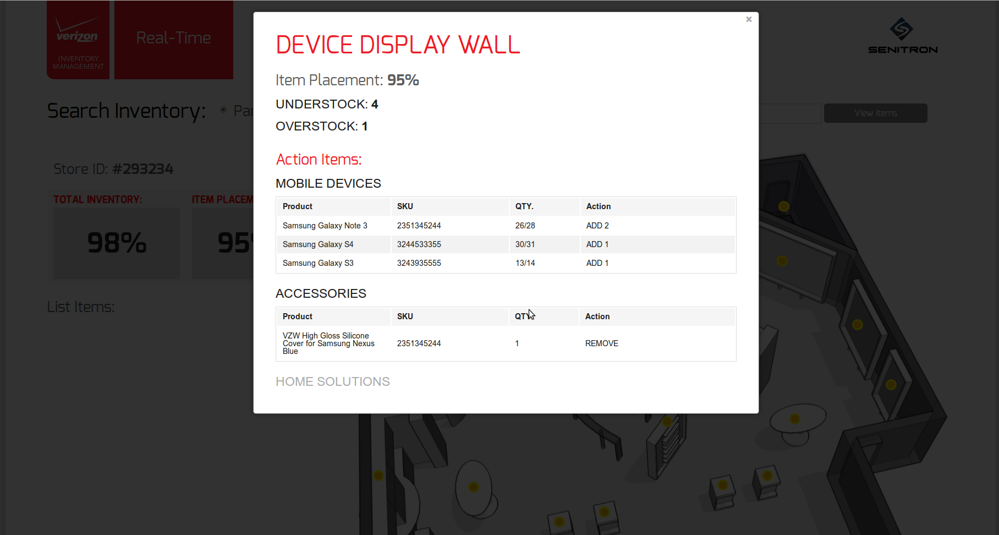

2014 Senitron RFID Inventory Tracking
UI/UX - HTML & CSS (w/ SASS) in Ruby/Rails framework - PostgreSQL- Foundation - Git
Senitron is the RFID solutions firm providing continuous real-time inventory and item level tracking solutions for automated retail store processes. Senitron designs both the hardware and software to read RFID tags in large numbers and in dense populations (100,000+ tags) and manage inventory with close to 100% accuracy in real time.
Visit website...


Screenshots of the web applications developed for pilot programs of early adopter companies Verizon (retail floor), American Apparel (retail floor w/ dense tag field), and Intuitive Surgical(first-in, first-out warehouse).


After more than six months of performance testing in select American Apparel locations, the retailer recently began chain-wide deployment of the Senitron system, which utilizes fixed RFID antennas mounted among the store's ceiling track lights. read more...
+
2013 Covisus Quantitative Optical Analysis
3D Design & Development - UI/UX - HTML, CSS, & jQuery in Ruby/Rails framework - Bootstrap
Covisus, through its proprietary DTEK technology, can track and determine conformance of physical items to original manufacturing condition without the use of external tags. Material surfaces have a randomized structure at the micrometer and nanometer scale. Like a fingerprint, an iris scan, or a snow flake, these patterns are unique and intrinsic to each individual item and cannot be predicted or replicated
Visit website...


+
2013 Chromologic LLC Style Guideline, Website, & SEO
Wordpress - SEO
Google's SEO guide was followed in a successful organic SEO campaign designed to increase relevant search engine results. Tools for optimization included adding XML sitemap and robot files, organizing site links, submitting to open online directories, and optimization of descriptive titles and meta data. A new company style guideline was also created for ChromoLogic LLC (and Covisus Corporation) for use in internal and external communication material.
Visit website...

+
2011-2012 Misc Projects
Product Design & Development - Landing & Home Pages - Architectural Design